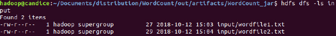
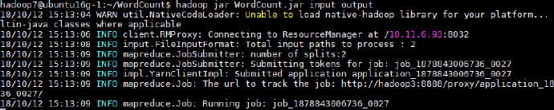

集群上使用
jar包
- 首先将之前
FileExist文件进行打包，得到.jar文件： - 将其拷贝到集群中，并使用
hadoop jar命令运行：
WordCount
添加依赖
- 首先我们需要新建一个
WordCount项目，首先要添加Hadoop的包依赖/usr/local/hadoop/share/hadoop/commonhadoop-common-xxx.jarhadoop-nfs-xxx.jar
/usr/local/hadoop/share/hadoop/common/lib下的所有Jar包/usr/local/hadoop/share/hadoop/mapreduce该目录下所有JAR包/usr/local/hadoop/share/hadoop/mapreduce/lib目录下所有JAR包
编写程序
import java.io.IOException;
import java.util.StringTokenizer;
import org.apache.hadoop.conf.Configuration;
import org.apache.hadoop.fs.Path;
import org.apache.hadoop.io.IntWritable;
import org.apache.hadoop.io.Text;
import org.apache.hadoop.mapreduce.Job;
import org.apache.hadoop.mapreduce.Mapper;
import org.apache.hadoop.mapreduce.Reducer;
import org.apache.hadoop.mapreduce.lib.input.FileInputFormat;
import org.apache.hadoop.mapreduce.lib.output.FileOutputFormat;
import org.apache.hadoop.util.GenericOptionsParser;
public class WordCount {
public WordCount () {
}
public static class TokenizerMapper
extends Mapper<Object, Text, Text, IntWritable>{
private final static IntWritable one = new IntWritable(1);
private Text word = new Text();
public TokenizerMapper () {
}
public void map(Object key, Text value, Mapper<Object, Text, Text, IntWritable>.Context context
) throws IOException, InterruptedException {
StringTokenizer itr = new StringTokenizer(value.toString());
while (itr.hasMoreTokens()) {
this.word.set(itr.nextToken());
context.write(this.word, one);
}
}
}
public static class IntSumReducer
extends Reducer<Text,IntWritable,Text,IntWritable> {
private IntWritable result = new IntWritable();
public void reduce(Text key, Iterable<IntWritable> values,
Reducer<Text,IntWritable,Text,IntWritable>.Context context
) throws IOException, InterruptedException {
int sum = 0;
for (IntWritable val : values) {
sum += val.get();
}
this.result.set(sum);
context.write(key, this.result);
}
}
public static void main(String[] args) throws Exception {
Configuration conf = new Configuration();
String[] otherArgs = (new GenericOptionsParser(conf, args)).getRemainingArgs();
if (otherArgs.length < 2) {
System.err.println("Usage: wordcount <in>[<in>...] <out>");
System.exit(2);
}
Job job = Job.getInstance(conf, "word count");
job.setJarByClass(WordCount.class);
job.setMapperClass(WordCount.TokenizerMapper.class);
job.setCombinerClass(WordCount.IntSumReducer.class);
job.setReducerClass(WordCount.IntSumReducer.class);
job.setOutputKeyClass(Text.class);
job.setOutputValueClass(IntWritable.class);
for (int i = 0; i < otherArgs.length-1; i++) {
FileInputFormat.addInputPath(job, new Path(otherArgs[i]));
}
FileOutputFormat.setOutputPath(job, new Path(otherArgs[otherArgs.length-1]));
System.exit(job.waitForCompletion(true) ? 0 : 1);
}
}
打包成JAR包
- 打开Project Structure：
- 进行编译：
- 生成并查看JAR包：
本地伪分布式运行
创建两个文件作为输入，内容为：
I love Spark I love Hadoop
Hadoop is good Spark is fast
将本地文件放入
hdfs中：hdfs dfs -mkdir -p /user/hadoop/input hdfs dfs -put ./wordfile1.txt input hdfs dfs -put ./wordfile2.txt input
在
hdfs中查看：hdfs dfs -ls input
运行：
hadoop jar WordCount.jar input output
查看结果：
hdfs dfs -cat output/*
集群上运行
首先将JAR包和文件放入集群：
将其拷贝到
HDFS中：hdfs dfs -mkdir -p /user/hadoop7/input hdfs dfs -put ./wordfile1.txt input hdfs dfs -put ./wordfile2.txt input
查看文件：
运行：
hadoop jar WordCount.jar input output
运行成功
查看生成文件
hdfs dfs -cat /user/hadoop7/output/*
查看集群运行情况
- 在连接VPN时，在浏览器中输入
10.11.6.91:50070 
- 在连接VPN时，在浏览器中输入